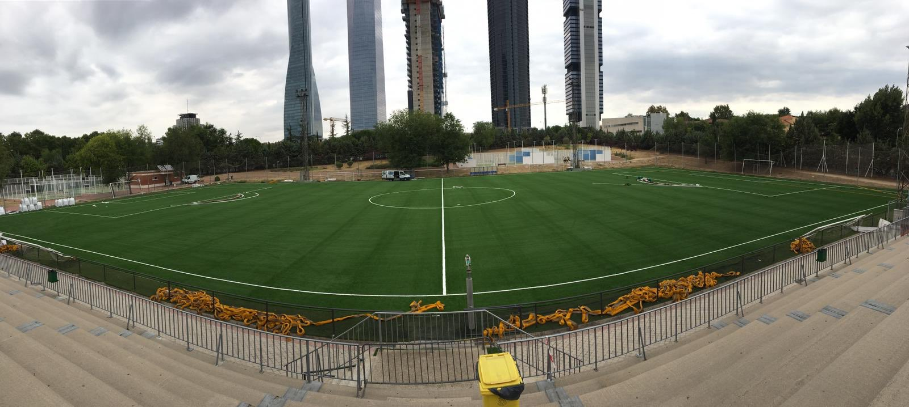
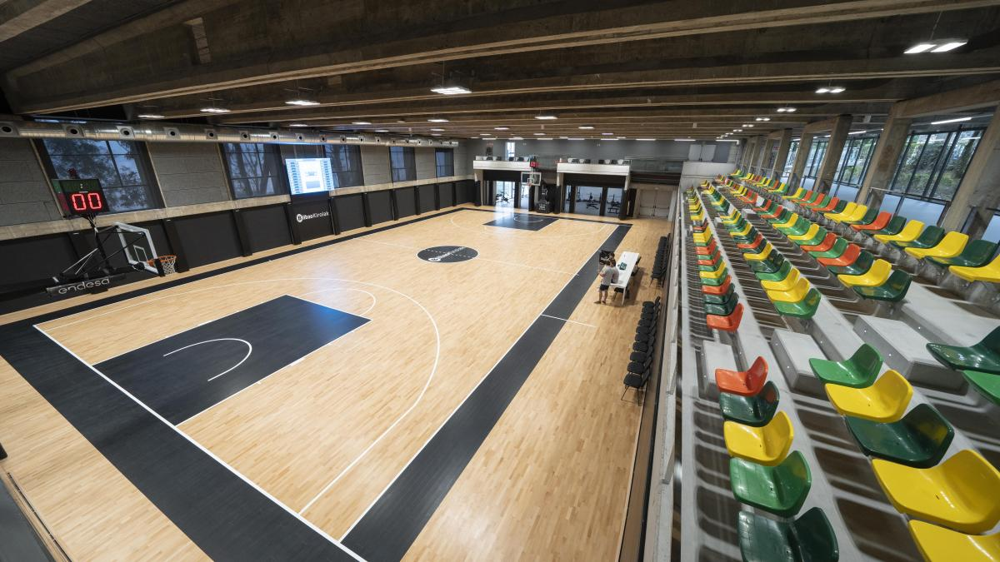
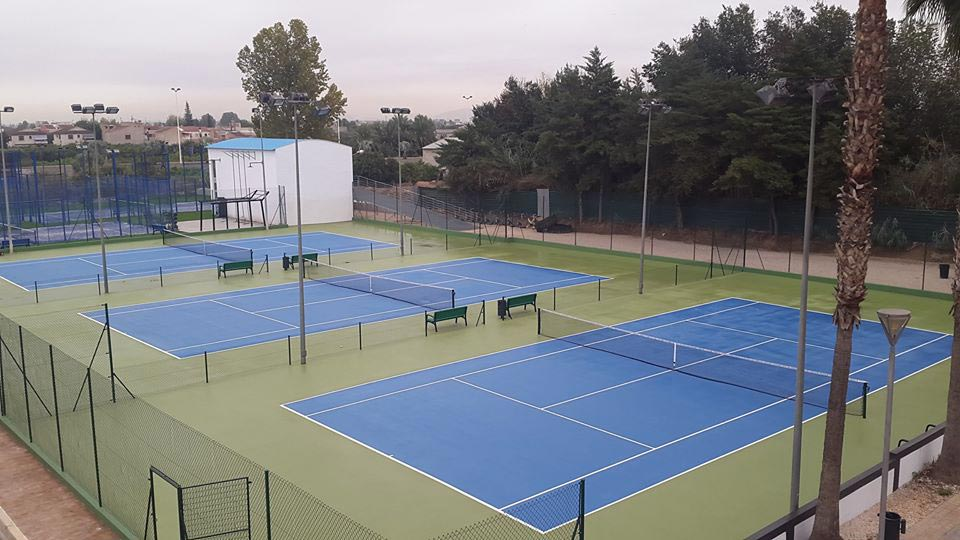
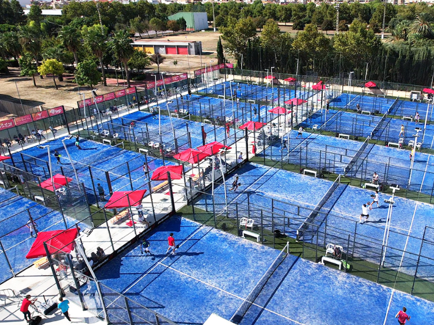

Somos un nuevo centro deportivo situado en Madrid. Contamos con unas grandes instalaciones, las cuales permiten realizar diferentes actividades deportivas:
- Futbol
- En nuestras instalaciones contamos con un campo de futbol 11 (hierba artificial). Tenemos un equipo de futbol federado, donde pueden inscribirse jugadores y se les asignara a un equipo dependiendo de su edad (min 5 años). Para mayor informacion vaya a la pagina principal, donde aparece toda la informacion sobre horarios, inscripciones, reservas, clases.

- Baloncesto
- Tenemos un pabellon de baloncesto y varias pistas exeteriores. Al igual que en el fubtol, tenemos un equipo, en el cual podran inscribirse jugadores y se le asignara a un equipo dependiendo de su edad (min:5 años). Para mayor informacion vaya a la pagina principal, donde aparece toda la informacion sobre horarios, inscripciones, reservas. clases.

- Tenis
- Os damos la bienvenida a nuestro club de tenis. Contamos con 10 pistas de tenis al aire libre. Tenemos clases para los amantes del tenis que quieran perfeccionar su tecnica. Tambien se pueden reservas pista para una practica libre y pasa un buen rato, estas seran de un minismo de 1 hora hasta un maximo de 3horas. Para mayor informacion vaya a la pagina principal, donde aparece toda la informacion sobre horarios, inscripciones, reservas. clases.

- Padel
- Al igual que en tenis, contamos con numerosas pistas de padel exteriores. Con el fin de poder disfrutar de nuestras clases o reservar la pista para pasar un rato divertido con amigos. Para mayor informacion vaya a la pagina principal, donde aparece toda la informacion sobre horarios, inscripciones, reservas. clases.

Contactanos:
Tfn: 911111111
Movil: 666666666
Correo: vivelesport@hotmail.com
Dir: C/ Santander, 23
Madrid,Madrid (28000)